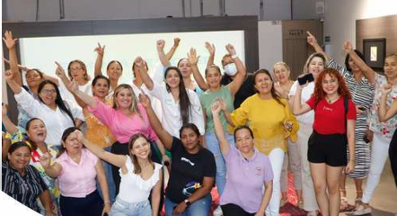
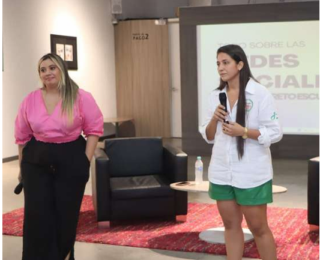
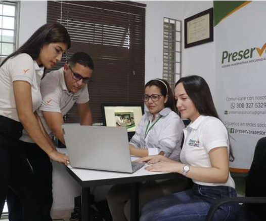

Formamos líderes que transforman el campo en oportunidades

Agrolab Raíz es una escuela fundada por empresarios agroindustriales con la misión de guiar a emprendedores hacia la construcción de emprendimientos sostenibles. A través de nuestra red de emprendimiento, identificamos, desarrollamos y potenciamos las habilidades necesarias para convertir ideas en proyectos viables. Reconociendo el valor del aprendizaje a partir del fracaso y el éxito, estamos comprometidos a enseñar a replicar el éxito y evitar el fracaso. Conocemos los desafíos del emprendimiento y ofrecemos herramientas para alcanzar el máximo potencial, transformando emprendimientos en empresas formalizadas en todos sus niveles
Nuestro compromiso es fortalecer y desarrollar empresas sostenibles, así como apoyar a emprendedores de micro, pequeñas y medianas empresas en el departamento de Sucre. Lo hacemos a través de programas exclusivos, gratuitos de mentorías y capacitaciones que equipan a los participantes con las habilidades necesarias para alcanzar el éxito empresarial.
Para el año 2030, Agrolab Raiz se convertirá en la comunidad de emprendedores agroempresariales más sólida y comprometida del departamento de Sucre, promoviendo el intercambio de experiencias y el aprendizaje mutuo. Creemos en la colaboración y en el poder del networking para impulsar el crecimiento y la creación de oportunidades, tanto en el desarrollo tecnológico como en el crecimiento personal de cada emprendedor, cultivando así un ecosistema próspero y sostenible para el sector agropecuario.

